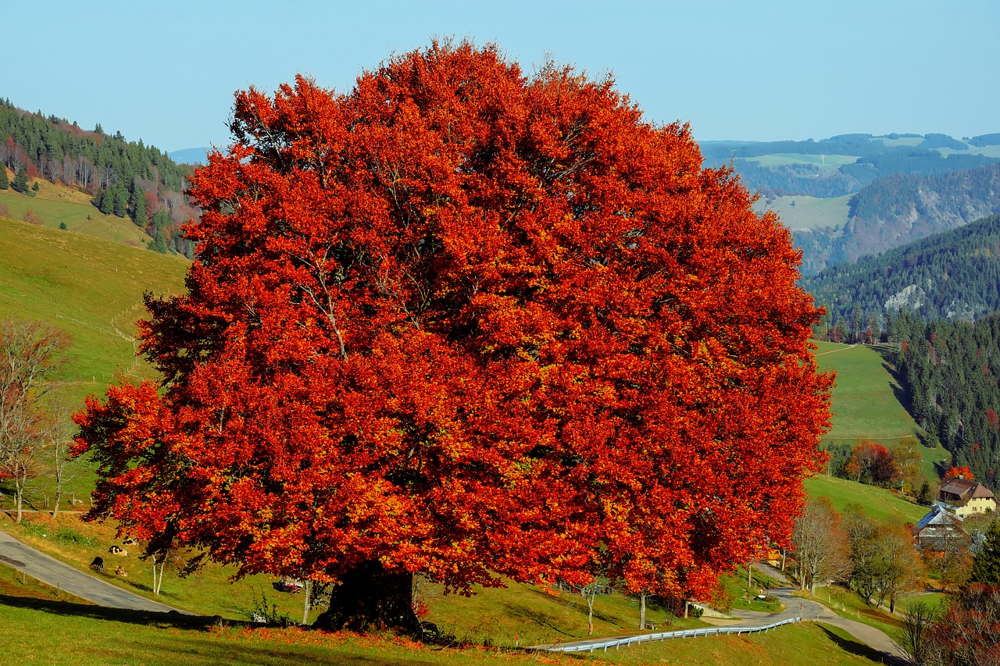

Pagoa
*******
Pagoak Fagazeoen familiako hamar espeziez osatutako generoko zuhaitz hostoerorkorrak dira, Europa, Asia eta Ipar Amerikakoak. Hosto osoak edo hortz urridunak dituzte, 5-15 cm luze eta 4-10 cm zabal. Loreak txikiak eta sexu bakarrekoak dira, arrak gerbetan elkartuak, udaberrian agertzen dira hosto berriak haizearen bidez berehala polinizatzen dira. Fruituak, pagatxak edo pagaziak, binaka sortutako hur txiki (10-15 mm luze) eta ebakidura triangeluarrekoak dira: jangarriak dira baina tanino kopuru handikoak eta mingotsak.